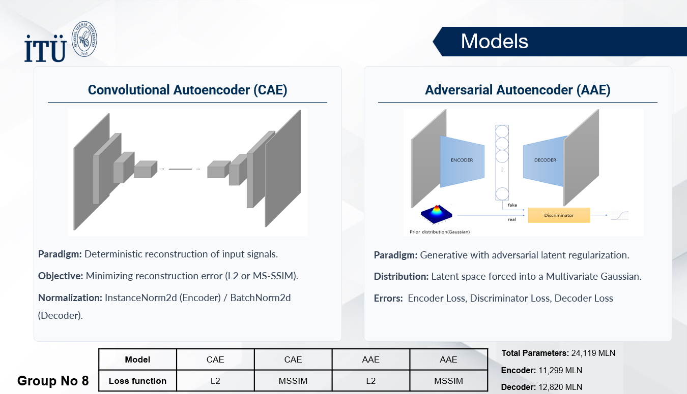

Deep Learning Anomaly Detection

This research evaluates unsupervised generative models for automated industrial visual inspection and defect localization. Utilizing Convolutional Autoencoders (CAE) and Adversarial Autoencoders (AAE), the models were trained exclusively on nominal data from the MVTec AD dataset to reconstruct defect-free structures. Unseen anomalies are isolated through pixel-precise reconstruction errors. To overcome the limitations of standard L2 loss on complex textures, the system implements a custom Multi-Scale Structural Similarity (MS-SSIM) loss function. Furthermore, the pipeline relies on an automated binary search calibration loop for optimal operational thresholding and adaptive spatial noise filtering via connected-component analysis.
Tools and Technologies
- Machine Learning: PyTorch, Torchvision, Generative Autoencoders (CAE/AAE)
- Algorithms: MS-SSIM, Morphological Filtering, Binary Search Calibration